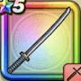

名刀 斬鉄丸
攻略班 5.5点 / ドラゴン斬りぶんまわしもろば斬りはやぶさ斬りつるぎのまい
くわしい特徴
【レベル別習得スキル】 Lv1ドラゴン斬り（消費MP：5）ドラゴン系に威力200%それ以外の系統には130%の斬撃ダメージを与える Lv10ぶんまわし（消費MP：9）振りまわした剣で、敵全体に威力120%の斬撃ダメージを与える Lv15もろば斬り（消費MP：7）敵1体に威力200%の斬撃ダメージを与えるが、与えたダメージの20％を自身も受ける Lv20はやぶさ斬り（消費MP：11）はやぶさのごとき高速の剣技で敵1体に威力120%の斬撃攻撃を2回する Lv30つるぎのまい（消費MP：14）舞うような剣技でランダムな敵に威力75%の斬撃攻撃を4回する Lv35けもの系へのダメージ+10% Lv40植物系へのダメージ+10% Lv45攻撃時+2%の確率で混乱を与える Lv50攻撃力+12 【限界突破スキル】 1凸スキルの斬撃・体技ダメージ+5% 2凸スキルの斬撃・体技ダメージ+5% 3凸スキルの斬撃・体技ダメージ+5% 4凸スキルの斬撃・体技ダメージ+5%